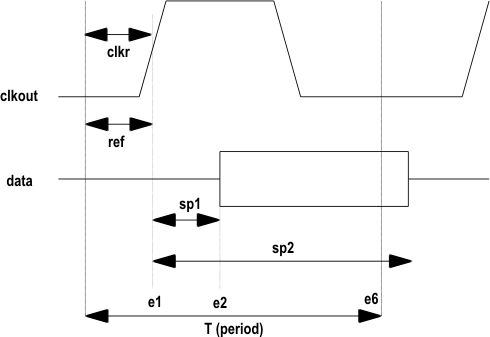
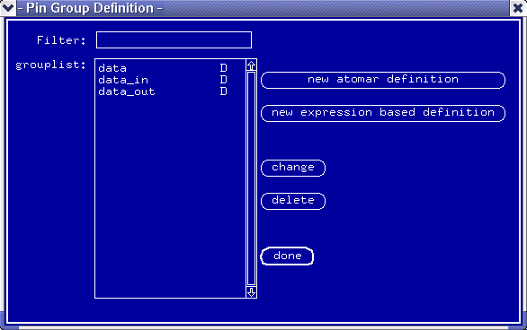
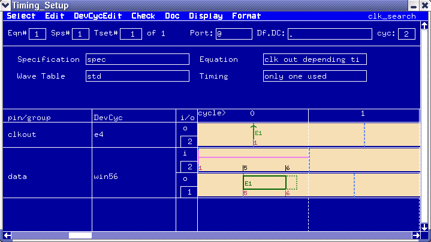

Using the Timing Setup Tool
This section introduces how to create equation based timing setup and how to edit the timing settings in the Timing Setup window.
To simplify the explanation of equation based testing, the following example is used.
This example demonstrates a realistic application of equation based testing, yet it is very simple.
Example scenario
A chip has the following timing relationship between some of its pins:

where,
- clkout is an output clock from the device
- data represents a group of data pins
- e1, e2, & e6 are edges at which actions occur
- ref is the reference delay at which the data valid signal is based.
- clkr is identical to ref, and is the first parameter to be measured. Once determined, the value is assigned to ref.
- sp1 is the point at which data is valid. Before it can be determined, ref must be known.
- sp2 is the point at which data becomes invalid. Before it can be determined, ref must be known.
- T is the period.
An equation based timing setup will be used to determine the values for ref, sp1 and sp2.
Setup views
The pins of the device have been defined in the usual way, and a group, data, created to represent the data pins, See the figure below.

Probably the most important setup is the Timing setup. Once again the timing has been constructed in the normal way. See the figure below.

Functional changes
- Introduced before SmarTest 6.3.2